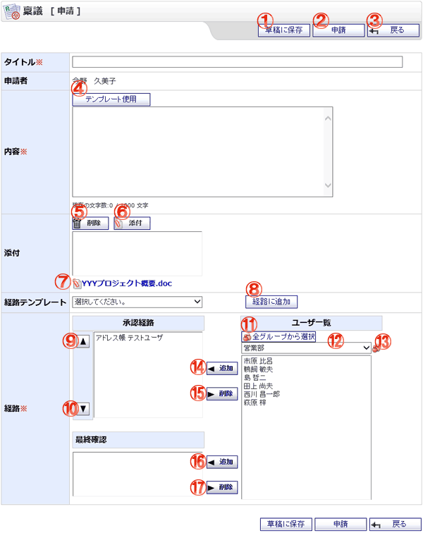

稟議を新規作成する画面です。

機能説明
草稿に保存ボタン入力内容を草稿として保存し、保存完了画面へ遷移します。入力内容に不備がある場合エラーメッセージが表示されます。 |
申請ボタン稟議新規作成確認画面へ遷移します。入力内容に不備がある場合エラーメッセージが表示されます。 |
|---|---|
戻るボタン遷移元の画面へ遷移します。 |
テンプレート使用ボタン内容テンプレート選択画面へ遷移します。 |
削除ボタン添付のリストで選択中の添付ファイルを削除します。 |
添付ボタン添付ファイル選択画面をポップアップで表示します。ファイルを選択し、確定すると添付のリストに選択したファイル名が追加されます。 |
添付ファイル名クリックすると添付ファイルのダウンロードができます。 |
経路に追加ボタン経路テンプレートコンボで選択されている経路テンプレートに設定されているユーザを、承認経路リストと最終確認リストへ追加します。 |
上へボタン承認経路リストで選択されているユーザの経路順位を上げます。 |
下へボタン承認経路リストで選択されているユーザの経路順位を下げます。 |
全グループから選択ボタンポップアップで全グループから選択画面が開きます。 |
グループコンボ選択したグループに所属するユーザがユーザリストに表示されます（既に承認経路リスト・最終確認リストに追加されているユーザは表示されません）。 |
グループボタンポップアップでグループ選択画面が開きます。 |
追加ボタンユーザリストで選択されているユーザを承認経路リストへ追加します。 |
削除ボタン承認経路リストで選択されているユーザを承認経路リストから除外します。 |
追加ボタンユーザリストで選択されているユーザを最終確認リストへ追加します。 |
削除ボタン最終確認リストで選択されているユーザを最終確認リストから除外します。 |
表示・入力項目説明
タイトル
タイトルを入力します（100文字以内）。
申請者
申請者の名前が表示されます。
作成日時
作成日時が表示されます（草稿の編集時のみ）。
内容
内容を入力します（1,000文字以内）。
添付
添付するファイルを選択します。
内容テンプレートから稟議の内容をセットした場合、テンプレートに設定されている添付ファイルのリンクが表示されます。
経路テンプレート
登録してある経路テンプレート一覧が表示されます。
経路テンプレートを使用したい場合は、使用したい経路テンプレートをコンボから選択し
経路に追加ボタンをクリックします。
経路
ユーザリストからユーザを選択し、承認経路リスト・最終確認リストへ追加します。
一人のユーザを承認経路リストと最終確認リストに同時に追加する事はできません。